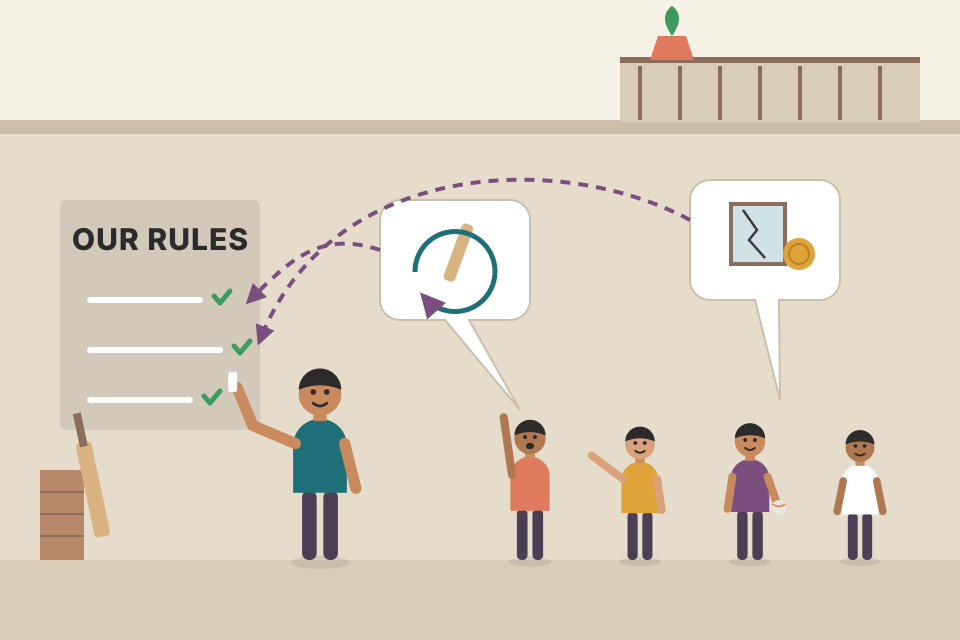
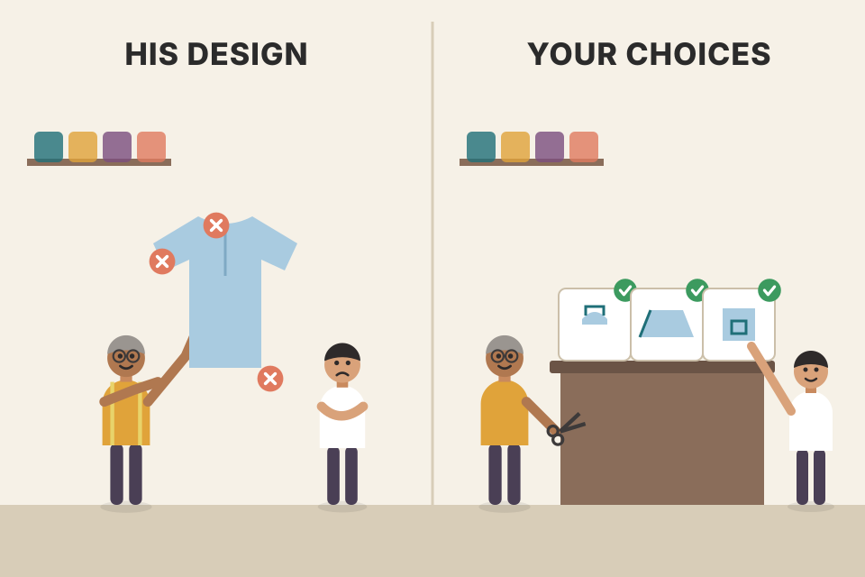
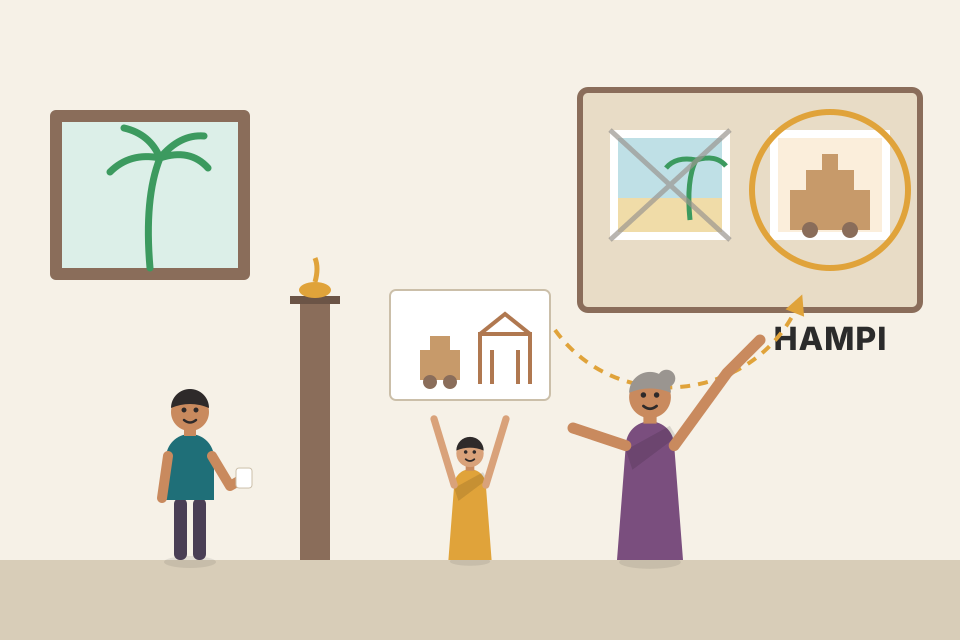
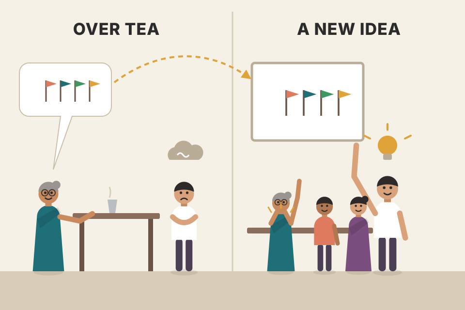
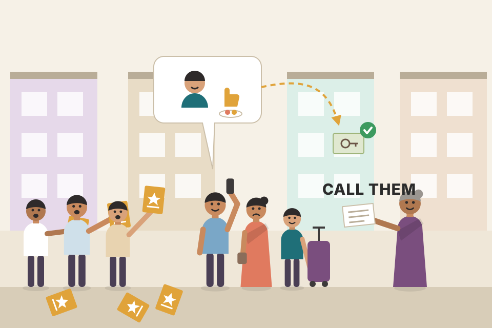
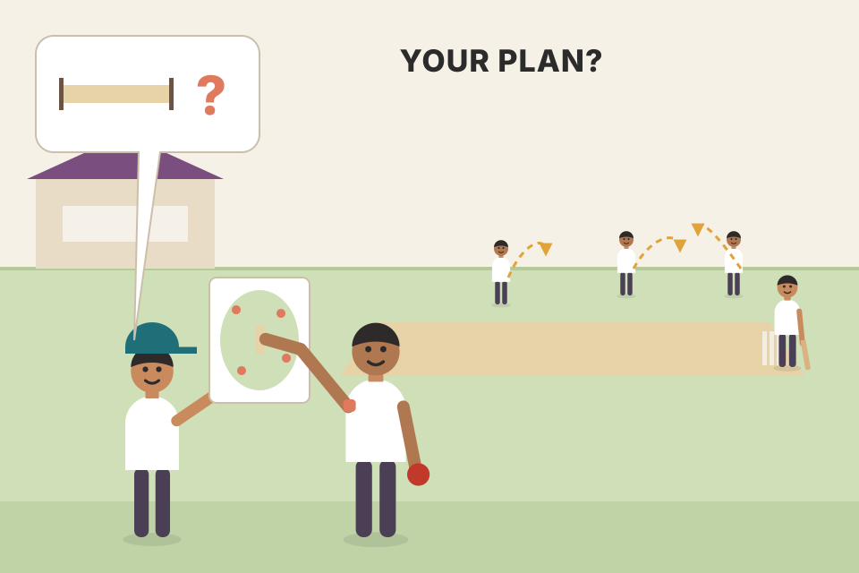

DALE CARNEGIE · HOW TO WIN FRIENDS · PART THREE · CHAPTER 7 · PDF p166–170
How to Get Cooperation
People trust the ideas they reach themselves far more than the ideas they are handed. So suggest, ask, leave gaps, and let the other person finish the thought. The idea they finish is the one they will fight for.
This is a short chapter with a single, sharp claim. Nobody likes to feel sold to or ordered about; we like to feel that we chose, that we were consulted, that the idea was ours. Carnegie proves it with six quick cases: a sales manager who let his team write their own rules, a sketch seller who stopped pitching and started asking, a husband who let his wife propose the holiday he wanted, an X-ray maker who asked a doctor for advice instead of a sale, a presidential adviser who let the President take his ideas, and a fishing camp that let Carnegie call its past guests. He closes with a line from Lao-tse about rivers ruling streams by staying below them. The cost of the method is real: you usually give up the credit.
Principle 7 of Part Three
Let the other person feel that the idea is his or hers.
How the chapter fits together
pdf p166–170 · read this first
Where it sits. This is chapter 7 of Part Three, "How to Win People to Your Way of Thinking", the longest part of the book (twelve principles). The chapters before it set up a conversation that persuades without a fight: avoid arguments (Ch.10), never say "you're wrong" (Ch.11), admit your own errors (Ch.12), begin in a friendly way (Ch.13), get early yeses (Ch.14), and let the other person do most of the talking (Ch.15). This chapter is the natural next step: once they are talking, let them talk their way to your conclusion and own it. Right after it comes "try honestly to see things from the other person's point of view" (Ch.17).
The argument as a chain. Each row reacts to the one before it.
Problemwe push our ideas on people→they resist being sold or told
Whywe trust ideas we find ourselves→we want to be consulted→a pushed idea feels like someone else's
At workSeltz: team writes the listWesson: buyer finishes the sketch
At homeDavis: daughter's enthusiasm, wife's announcement
SellingX-ray maker asks for advicecamp owner sends references→they sell themselves
PowerEmerson: our "rejected thoughts"Colonel House plants ideas in Wilson→results over credit
WisdomLao-tse: rivers rule by staying low→Principle 7
Costyou give up the credit→and it must be sincere (beyond the book)
The file name says "let them own the idea"; the book's chapter title is "How to Get Cooperation". Both describe the same move: cooperation comes from ownership.
01 · THE OPENING QUESTION AND THE FIRST STORY
Adolph Seltz lets a demoralised sales team write its own rules
pdf p166
Carnegie opens with three questions, and each one carries part of the argument:
Don't you believe much more in an idea you worked out yourself than in one served to you ready-made?
If so, isn't it poor judgment to force your own opinions on other people?
Wouldn't it be wiser to make suggestions and let the other person reach the conclusion?
Notice the method in the opening itself: he does not tell you the principle, he asks you questions until you agree with it. The chapter starts by doing what it teaches.
Adolph SeltzPhiladelphiasales manager, car showrooma student in Carnegie's course
The situation. Seltz suddenly had to put some energy back into a sales team that was discouraged and disorganised.
The move. He skipped the pep talk. At a sales meeting he opened by asking for the team's wish-list for a manager, and put it up on the board item by item as it came. He agreed to every item, then flipped it: what did the team owe him in return?
What they offered. The answers came fast, and they were the team's own: loyalty, honesty, initiative, optimism, teamwork, and eight hours a day of enthusiastic work.
The result. The meeting ended with fresh courage and inspiration. One salesperson volunteered to work fourteen hours a day. Seltz told Carnegie that the rise in sales was "phenomenal" (the book gives no figure).
His explanation. The team had made a kind of moral bargain with him: as long as he kept his side, they were determined to keep theirs. Being consulted about their own wishes was the boost they needed.
"The people had made a sort of moral bargain with me."Adolph Seltz, quoted by Carnegie (pdf p166)
Why the order matters. Seltz asked about his own duties first. By the time he asked what they owed him, they had already been listened to and had seen their words on the board. Their list of duties then was not a demand from the boss; it was the second half of a deal they had written themselves. Any manager could have announced "I expect loyalty, initiative and enthusiasm". The words would be the same, and they would have meant nothing to the team.
Step through the meeting
Picture it

Before a gully-cricket season, the senior boy in the colony could just announce the rules: one-tip-one-hand, no hitting into Sharma uncle's balcony, everyone fields. Instead he asks the group what they want from him as captain (fair turns batting, no favourites), writes it on the wall with chalk, agrees to all of it, and then asks what the team owes in return. They come up with "everyone fields, nobody leaves early, whoever breaks a window pays". Those rules hold all summer, because the boys wrote them.
Where it breaks: a gully team can make up any rules it likes. A sales team still has targets set from above that nobody voted on. Seltz could not let his people choose whether to sell; he let them choose how they would work together, and that was enough.
What's happening behind it
The book's explanation: people dislike feeling told or sold, and like being consulted about their wishes, wants and thoughts. Seltz's team was consulted twice: once about what they needed, once about what they would give. The duties were theirs, so keeping them felt like keeping their word, not obeying an order.
Beyond the book: two well-studied effects line up with this story. Reciprocity: Seltz gave first (he promised everything on their list), which makes people want to give back. Commitment and consistency (Robert Cialdini's term): a promise made out loud, in public, in your own words, is one people work hard to stay consistent with. The volunteer who offered fourteen hours had committed in front of his peers.
At work
The engineering version is a team working agreement, written by the team at a kick-off or a retro. A new lead who posts "Team norms: PRs reviewed within 24 hours, cameras on in stand-up, no deploys on Friday" gets grudging compliance. A lead who first asks "What do you need from me as your lead?" (protect focus time, clear priorities, fewer surprise asks), writes it down, commits to it, and then asks "What should we expect from each other?" usually hears the same norms back, often stricter, and sees them kept.
Interview angle. "Tell me about a time you turned around a struggling team." A strong answer has Seltz's shape: you asked what the team needed from you before asking anything of them, you made both sides visible, and you kept your half. Avoid an answer that is only about the rules you introduced.
Worked example: the first meeting with a demoralised team
Handed down
"Morale has been low and delivery has slipped. From now on I expect ownership, punctual stand-ups and code reviewed within a day. Let's turn this around."
Correct, and nobody disagrees. Nobody feels it is theirs either.
Seltz's way
"Before I ask anything of you: what do you need from me to do your best work here?" (writes every answer in the shared doc, commits to them) "Thanks. I'll do all of that. Now, what should we be able to count on from each other?"
The team writes "review within a day" itself, and the doc becomes a two-way deal.
Letting them talk first (the blackboard was their talking): Part Three, Ch.6.
02 · THE RULE, AND A SALESMAN WHO LEARNED IT LATE
Eugene Wesson: 150 visits without a sale, then a bundle of unfinished sketches
pdf p166–167
The rule in plain words. Between the two stories Carnegie states the idea that the whole chapter rests on:
Nobody likes feeling that they are being sold something, or being told to do something.
We much prefer to feel we are buying of our own accord and acting on our own ideas.
We like to be consulted about our wishes, our wants and our thoughts.
Eugene Wesson, he says, lost countless thousands of dollars in commissions before he learned this.
Eugene Wessonsold sketches for a design studiobuyer: a leading New York stylistweekly visits · 3 years · 150 refusals
The job. Wesson sold sketches from a studio that produced designs for stylists and textile manufacturers.
Three years of "no". Every week for three years he called on one of New York's leading stylists. Three years of courteous meetings and courteous refusals: the buyer gave every sketch a careful look and never bought one.
The rethink. After about 150 failures Wesson decided he was stuck in a mental rut. He set aside one evening a week to study how to influence people's behaviour, hoping for new ideas and new energy.
The new approach. He took half a dozen unfinished sketches to the buyer and asked a small favour: could the buyer tell him how to finish them so that they would be useful to him?
What happened. The buyer looked at them for a while without a word, then asked Wesson to leave them for a few days. Three days later Wesson came back, took the buyer's suggestions, had the studio finish the sketches his way, and brought them in. All of them were accepted. After that the buyer ordered scores more sketches, every one drawn to his ideas.
Wesson's own diagnosis. For years he had pushed the buyer to purchase what Wesson thought he should have. Once he asked for the buyer's ideas instead, the buyer felt he was creating the designs, and, Wesson adds, he really was. He did not have to be sold; he bought.
"I didn't have to sell him. He bought."Eugene Wesson, quoted by Carnegie (pdf p167)
Two details worth noticing. First, the buyer's input was real: the sketches were finished to his ideas, so they fitted his needs better. This is not a trick of flattery; asking produced a better product. Second, the change came from Wesson studying people, not from better sketches. His art was never the problem; his approach was.
Picture it

A tailor in Chandni Chowk can hold up a finished kurta and say "this will suit you", and you will find ten small things wrong with it. Or he can show you the cloth, ask whether you want the collar Nehru-style or plain, the sleeves full or three-quarter, side pockets or not. When the kurta is ready you love it, because you designed it. He did the skilled work; you made the choices.
Where it breaks: the tailor's customer is buying for himself. Wesson's buyer was choosing for a business, and his ideas had to be good for that business. Asking only works when the other person's input genuinely improves the result; if it does not, it becomes theatre.
What's happening behind it
The book's explanation: a finished sketch is the seller's idea, so the buyer's role is to judge it, and judging means looking for reasons to say no. An unfinished sketch turns the buyer into a co-designer. People do not reject their own designs; Wesson's buyer "sold himself".
Beyond the book: researchers call one part of this the IKEA effect (Norton, Mochon and Ariely, 2012): people value things more when they helped build them, even a little. Asking for advice also tends to make the adviser feel more committed to the person who asked, because they now have a stake in the advice working out.
At work
Wesson's unfinished sketch is the draft RFC, the rough prototype, the "strawman" design doc. Engineers often polish a design for weeks and then present it complete, inviting the room to do one thing: find holes. Share it at 60% instead, with open questions written in ("I haven't decided how retries should work. What would you need here?"), and the reviewers start finishing it with you. By the review meeting, the people who would have blocked it have their fingerprints on it.
The same holds with clients and product managers: bring two rough options and ask which fits their goal better, rather than one polished answer to approve or reject.
Interview angle. "Tell me about a time you got buy-in for a technical proposal." Describe sharing an early draft with the sceptics first, asking what would make it work for them, and building their input in. Saying "the final design included X, which was her idea" is strong evidence.
Rewrite it: from "finished sketch" to "unfinished sketch"
Pick a message that hands over a finished idea. Decide how you would rewrite it so the other person helps finish it, then reveal a Carnegie-style version.
Paul Davis and the family holiday: two dream trips, one summer
pdf p167–168
Carnegie says the principle works not only in business and politics but in family life, and gives a story told in class by a student.
Paul M. DavisTulsa, Oklahomawife Nancy · daughter Anneeast coast vs the western states
Two dreams, one holiday. Davis had long wanted a history trip in the eastern states: the Civil War battlefield at Gettysburg, Independence Hall in Philadelphia, the capital, Washington, plus Valley Forge, Jamestown and the restored colonial town of Williamsburg. In March his wife Nancy said she had her own plans for the summer: a tour of the West, through New Mexico, Arizona, California and Nevada, a trip she had wanted for several years. They clearly could not do both.
His move. He did not argue for his trip. Their daughter Anne had just finished a US history course in junior high school and had become very interested in the events that shaped the country. Davis asked her how she would like to visit, on the next holiday, the places she had learned about. She said she would love it.
The result. Two evenings later at dinner, it was Nancy who proposed the eastern trip, pitching it as the right holiday for Anne, if the others were happy. They were. Davis called it one of the most interesting sightseeing trips the family ever took.
What he actually did. He never proposed his own trip against hers. He found a reason for the eastern trip that had nothing to do with him (their daughter's new interest), let that reason reach his wife naturally, and let her make the decision and the announcement. The conclusion was his, but the decision was hers, and she made it for a reason she cared about.
Dated framing. The story is told as a husband quietly steering his wife. Today we would see it as any family member, of any role, finding the shared reason behind a choice. It also raises a fair question about openness, taken up in "Where it can go wrong" below.
Picture it

In a joint family in Kochi, one cousin wants the Diwali trip to be Hampi; an aunt has her heart set on Goa. Instead of lobbying, the cousin asks his little niece, who just did a school project on the Vijayanagara empire, whether she'd like to see the real ruins. A day later the aunt is telling everyone that Hampi would be "so educational for the child", and the matter is settled.
Where it breaks: in a family, people talk. If the aunt later learns the cousin set it up on purpose, she may feel played, and next year's trip gets harder. The move works best when the shared reason is real (the niece truly is excited) and you would be comfortable if everyone knew what you did.
What's happening behind it
The book's explanation: a direct proposal would have set Davis's wish against Nancy's, and each would defend their own idea. By letting the decision come from her, for a reason she cared about, there was nothing to defend and nothing to lose face over. Everyone "concurred" because nobody had been defeated.
Beyond the book: negotiation writers call this moving from positions ("East!" vs "West!") to interests (a trip the whole family, especially Anne, would love). Fisher and Ury's Getting to Yes argues that when you surface a shared interest, the choice often makes itself. Davis found the interest; Nancy made the choice.
At work
Two senior engineers each want their own approach (rewrite the service in Go vs fix the Python one). Arguing positions is the East-versus-West dinner fight. Find the "Anne": the shared interest both care about, such as the on-call team being paged every night, or the new joiners who cannot ship in this codebase. Put that in front of both ("What would make on-call bearable by Q3?") and let them choose. The one who announces the decision will back it.
Interview angle. "Tell me about a time you resolved a disagreement between two strong opinions." Describe moving the conversation from whose idea wins to what both sides were trying to protect, and letting the group decide. Be clear that you were open about it.
Worked example: picking the team offsite
Pushing your position
"I really think we should do the hackathon this year, not the trek. Trek was fun but we never built anything."
Now it is your idea against the trek fans' idea, and someone has to lose.
The Davis way
In the planning thread: "The three new joiners said they haven't paired with anyone outside their squad yet. What would help them most at the offsite?"
Someone suggests building something together in mixed teams. They now own the hackathon idea.
Talking in terms of what the other person cares about: Part Two, Ch.5.
04 · SELLING BY ASKING FOR ADVICE
The X-ray maker who asked a busy doctor for help instead of an order
pdf p168–169
The same psychology, Carnegie says, won one manufacturer a big hospital contract.
a large hospital in Brooklynnew wing, "finest X-ray department in America"Dr. L——, head of X-rayswamped by salespeople
The situation. The hospital was building an extension and planned to equip it with the best X-ray department in the country. Dr. L——, in charge of the department (the book keeps his name hidden), was besieged by salesmen, every one of them pushing his own brand.
One maker did it differently. Carnegie says he understood human nature far better than the rest. He wrote the doctor a letter that, in our summary, did four things:
News, not a pitch: a new range of machines had just come in.
An admission: they still had flaws the company wanted to fix.
A request for his expertise: would he inspect them and suggest how to make them better for radiologists? The company would count it a big favour.
No effort for him: a car would fetch him whenever suited him.
How the doctor felt. Telling the story to Carnegie's class, Dr. L—— said the letter surprised him and flattered him: no X-ray maker had ever asked for his advice before, and it made him feel important. He was busy every night that week, but he cancelled a dinner appointment to go and see the equipment.
The result. The more he studied the machines, the more he found for himself how much he liked them. Nobody had tried to sell him anything. He felt that buying the equipment for the hospital was his own idea. He sold himself on its quality and ordered it installed.
"I sold myself on its superior qualities."Dr. L——, quoted by Carnegie (pdf p169)
Twenty pharma reps queue outside a well-known physician's clinic in Lucknow, each with a glossy brochure saying his drug is the best. One rep instead asks the doctor if he would review the patient information leaflet for a new formulation: "We think it's confusing for elderly patients. How would you explain it?" The doctor spends twenty minutes on it, and a month later he is the one telling colleagues the new formulation is well thought-through.
Where it breaks: this works because the doctor's expertise really can improve the leaflet. If the request is fake, a busy professional notices quickly and trust collapses. Many hospitals today also have strict procurement rules, so a single doctor's enthusiasm is rarely enough on its own.
What's happening behind it
The book's explanation: every other seller asked the doctor to accept their claim. This one asked for his judgment. A claim invites resistance; a request for judgment invites the person to explore, and what you discover yourself you believe. Feeling important made him willing to give up an evening; discovering the merits himself made him the buyer.
Beyond the book: studies on advice-seeking (for example by Alison Wood Brooks and colleagues, 2015) found that asking someone for advice tends to make them see you as more competent, not less, especially when the task is hard and the person is an expert. And "it's not perfect" is a classic way to lower someone's guard: research on two-sided messages finds that admitting a small weakness can make the rest of the message more believable.
At work
Sales engineers and founders use the X-ray letter constantly, often without knowing it: "We're in beta and it has rough edges. Would you try it for a week and tell us what's missing for a team like yours?" Design partners who shape a product usually become its first and loudest customers.
Inside a company, the same move works on a senior architect who keeps blocking your team's service: instead of a review request ("please approve"), send an advice request ("this isn't right yet; you've seen how the old auth system failed, where would you push on this design?").
Interview angle. "How do you work with stakeholders who are sceptical of your project?" Describe inviting them in early as advisers on a real, unfinished problem, and say what their input changed.
Which response? Twenty vendors, one buyer
Pick a response to see how Carnegie would judge it.
Connects to
"Make the other person feel important, and do it sincerely": Part Two, Ch.6.
Emerson's "rejected thoughts", and Colonel House planting ideas in President Wilson
pdf p169
Emerson first. Carnegie quotes Ralph Waldo Emerson's essay "Self-Reliance": when we meet a work of genius, we recognise in it thoughts we once had ourselves and threw away, and they come back to us looking grand and strange. The point for this chapter: people warm most to ideas that feel like their own, even ones that came from outside.
"In every work of genius we recognize our own rejected thoughts."Ralph Waldo Emerson, "Self-Reliance", quoted by Carnegie (pdf p169)
Colonel Edward M. HousePresident Woodrow Wilsonsource: House to Arthur D. Howden Smith, The Saturday Evening Post
Who he was. While Woodrow Wilson was President, Colonel House had huge influence on national and international affairs. He was the President's most trusted private counsellor, ahead even of the cabinet.
How he did it. We know his method because House described it himself to the writer Arthur D. Howden Smith, who quoted him in The Saturday Evening Post. His trick, learned once he knew Wilson well: drop an idea into conversation lightly, just enough to make it interesting, and then leave Wilson to chew on it himself.
How he found out, by accident. On a visit to the White House, House pressed a policy that Wilson seemed to dislike. A few days later, at dinner, House was amazed to hear Wilson bring up the same suggestion as his own.
What House did then. He did not interrupt to say "that was my idea". Carnegie stresses that House did not care about credit; he cared about results. So he let Wilson go on believing the idea was his. He went further: he gave Wilson public credit for these ideas.
Carnegie's takeaway. Everyone we deal with is as human as Woodrow Wilson, so we can use House's technique on anyone. Notice the price of it: House gave up the credit, publicly and permanently. That is the part most people find hardest.
Picture it

A senior teacher in a Chennai school suggests to the new principal, over tea, that the annual day could be run by the students' houses competing. The principal frowns: too chaotic. A week later, in the staff meeting, the principal proudly announces "a new idea": house-wise annual day. The teacher smiles, says it is a brilliant plan and volunteers to coordinate it. The annual day is the best in years.
Where it breaks: at school nobody is promoted for the annual day idea. At work, credit often turns into raises and promotions. Giving it away every time can quietly cost you, and a good manager should notice where ideas really come from (see "Where it can go wrong").
What's happening behind it
The book's explanation: Wilson resisted the idea while it was House's, but adopted it once he had thought about it himself. Pushing it back as "mine" would have turned it into House's idea again, and a President might drop it just to prove nobody was managing him. Giving Wilson public credit locked the idea in: now Wilson had a public stake in it.
Beyond the book: psychologists describe reactance (Jack Brehm, 1966): when people feel their freedom to decide is being pushed, they push back, sometimes towards the opposite choice. A casual mention leaves the freedom intact. Separately, people have a well-documented tendency to forget where an idea came from and later remember it as their own (called cryptomnesia or source-monitoring error), which is exactly what seems to have happened to Wilson.
At work
You suggested in a hallway chat that the team should add feature flags before the big launch. Your tech lead said "not now". Two weeks later he presents "our feature-flag plan" in the planning meeting. The House move: say "great call, I'm happy to set up the flag service", and do it. The flags ship, the launch is safe, and the lead now trusts you as someone who helps his ideas succeed.
The leader's side of the same chapter: if you are the one whose team keeps handing you ideas, do what House did for Wilson in reverse. Give them the credit in public. "This came from Ananya's spike last sprint" costs you nothing and is worth a lot to her.
Interview angle. "Tell me about a time you influenced a decision without authority." House is the textbook case. A good answer describes planting the idea early, letting the decision-maker shape it, and caring about the outcome more than the credit. Be honest about which part was yours without claiming the whole decision.
Reflect, then reveal: an idea someone else now owns
Think of an idea you suggested that someone else later presented as their own (at work or at home). Write how you felt and what you did, or what you wanted to do. Nothing is saved.
Connects to
Giving someone a fine reputation to live up to (House gave Wilson public credit): Part Four, Ch.7.
Making the other person happy about doing what you suggest: Part Four, Ch.9.
The deepest human urge is to feel important; giving credit feeds it: Part One, Ch.2.
06 · CARNEGIE AS THE CUSTOMER
The New Brunswick fishing camp that let Carnegie sell himself
pdf p169–170
The last story is Carnegie's own, told from the receiving end: someone used the technique on him and won his business.
Carnegie, planning a fishing and canoeing tripNew Brunswick, Canada"scores" of brochuresone camp owner
The flood. Carnegie wrote to the provincial tourist bureau for information. His name and address evidently went onto a mailing list, because he was immediately buried under scores of letters, booklets and printed testimonials from camps and guides. He was bewildered and could not tell which to pick.
The clever one. One camp owner sent no brochure at all, just a short list of past guests from New York with their phone numbers, and in effect: call them yourself.
The result. To his surprise, Carnegie knew one of the men on the list. He phoned him, heard about his experience, and then wired the camp the date he would arrive.
Carnegie's summary. All the others had tried to sell him their service. One let him sell himself, and that one won.
What the camp owner understood. A brochure is the seller talking about himself; Carnegie had scores of those and no way to tell them apart. A list of past guests handed Carnegie the means to reach his own conclusion, from a source he trusted more than any seller: someone like him, and in the end someone he actually knew. The owner did less selling than anyone, and got the booking.
Picture it

Ten PG and hostel owners near a Pune college all hand a new student's parents glossy flyers: "best food, 24-hour water, homely atmosphere". One owner just says, "Here are the numbers of three students from your town who stayed with us last year. Call them, ask anything." The parents ring one, hear about the food and the warden, and pay the deposit the same evening.
Where it breaks: the owner is betting that his past guests were happy. If the service is poor, references sink him fast. Letting people sell themselves only works when what they will find is genuinely good; it is a way to let quality show, not a way to hide its absence.
What's happening behind it
The book's explanation: every brochure was a seller's claim, and a pile of competing claims leaves the buyer confused and wary. The reference list gave Carnegie a way to decide for himself, so the decision felt like his, and he trusted it.
Beyond the book: Cialdini calls the force at work social proof, and it is strongest when the others are similar to us (here, fellow New Yorkers). Hearing it from someone you already know adds liking on top. Today's version is reviews and testimonials from peers, which is why "talk to a customer like you" is one of the strongest moves in business-to-business sales.
At work
When you are hiring, the camp owner's move is "talk to people on the team, not just me": candidates trust an engineer's honest answer more than a recruiter's pitch. When you want another team to adopt your library, don't write a longer README about how good it is; point them to the two teams already using it and let them ask. When proposing a new tool internally, run a small pilot and let the pilot users report back.
Interview angle. Turn it on yourself: in a job interview, "my last tech lead would tell you…" is weaker than letting your work be checked ("here is the public repo / the design doc / the talk, take a look"). And when you ask questions at the end, ask to speak to someone on the team; you will learn more than from any pitch.
Worked example: getting another team to adopt your internal SDK
The brochure
"Our SDK is faster, safer and better-documented than rolling your own. It handles retries, auth and tracing out of the box. You should switch."
One more claim in a crowded channel. They have heard this from five platform teams already.
The guest list
"The payments and search teams moved to it last quarter. Rahul and Meera led those migrations; they'll tell you honestly what was painful. Want me to set up 20 minutes with either?"
They hear it from peers, decide for themselves, and if they switch it is their choice.
Connects to
Dramatize your ideas, so people see the evidence instead of hearing a claim: Part Three, Ch.11.
Talking in terms of the other person's interests (what Carnegie wanted to know, not what the camp wanted to say): Part Two, Ch.5.
07 · THE CLOSE
Lao-tse's rivers, and Principle 7
pdf p170
An old image to end on. Carnegie closes with the Chinese sage Lao-tse, writing some twenty-five centuries earlier. The image, in short: the sea collects every mountain stream because it sits lower than all of them. A wise leader works the same way, putting himself beneath and behind the people he leads, so that his leadership is never felt as a burden or an insult.
"Though his place be above men, they do not feel his weight."Lao-tse, in the translation Carnegie quotes (pdf p170)
How it ties the chapter together. Every person in the chapter went "below" or "behind" in this sense: Seltz asked what his team needed from him before asking anything; Wesson asked the buyer for help; Davis let his wife announce the decision; the X-ray maker asked the doctor for advice and admitted his machines were imperfect; House let the President take his ideas and the credit; the camp owner stepped back and let his guests speak. Each one still got what he was after.
Principle 7 (of Part Three)
Let the other person feel that the idea is his or hers.
The toolkit, collected from the chapter's stories. The book does not list these as steps; this table is our summary of the moves its six cases use.
Move
Who used it
What it sounds like today
Ask what they expect, then what they will give
Adolph Seltz
"What do you need from me? … And what can we count on from each other?"
Bring it unfinished; ask them to finish it
Eugene Wesson
"Here's a rough draft. How would you shape it so it works for you?"
Find the shared reason and let them decide
Paul Davis
"The new joiners are struggling with X. What would help most?"
Ask for expert advice; admit it isn't perfect
The X-ray maker
"It isn't right yet. You know this area: where would you improve it?"
Plant it casually; give them the credit
Colonel House
"Just a thought, no need to decide now…" then later: "Great call."
Give them the means to judge for themselves
The camp owner
"Talk to the teams already using it."
Picture it

A good cricket captain at the toss does not tell his best bowler "bowl from the pavilion end, short of a length". He asks, "Which end do you want, and what's the plan for this batsman?" and then sets the field to the plan. The bowler runs in harder for a plan he made. The captain is still the captain; everyone knows who sets the field. He simply does not make the bowler feel the weight of it.
Where it breaks: on a tense last over, the captain sometimes has to decide fast and say so. Leading from behind takes time, and a real crisis may not give you that time. Lao-tse describes a habit, not a rule for every moment.
What's happening behind it
The book's explanation: people resist those who stand over them and push; they follow, willingly, those who put them first. Influence that is not felt as a weight is not resisted.
Beyond the book: this idea later became known in management writing as servant leadership (Robert Greenleaf, 1970), and research on self-determination theory (Deci and Ryan) finds that people given a sense of autonomy over their work are more motivated and more persistent than people who are simply directed. Ownership is a motivational need, not just a pleasant feeling.
At work
For a tech lead, Principle 7 is the default way to lead design: ask the team to propose; steer with questions ("how does that behave if the queue backs up?"); let the person who proposed it present it; give them the credit in the review and the release notes. You still own the outcome and can still say no. The team just does not feel the weight of your title in every decision.
Interview angle. "How do you lead without micromanaging?" or "Describe your leadership style." A concrete Principle 7 answer: "When I already have a view, I ask questions first and see if the team reaches it, or something better. When they do, it's their design, and they defend it in review better than I would."
Self-audit: this week, did I…
Connects to
Asking questions instead of giving direct orders: Part Four, Ch.4.
Letting the other person save face (Wilson never had to admit he had once rejected the idea): Part Four, Ch.5.
Next in this Part: seeing things from the other person's point of view, Ch.8.
08 · WRAP-UP
Summary and key terms
pdf p166–170
The claim. We trust ideas we discover ourselves more than ideas handed to us, so forcing opinions on people is poor judgment. Make suggestions and let them reach the conclusion. Nobody likes to feel sold or told; everyone likes to be consulted about their wishes, wants and thoughts.
Adolph Seltz asked his discouraged car sales team what they expected of him, promised it all, then asked what he could expect of them. Their own list (loyalty, honesty, initiative, optimism, teamwork, eight enthusiastic hours a day) became a "moral bargain"; one volunteered fourteen hours a day and sales rose "phenomenally".
Eugene Wesson called on a New York stylist weekly for three years and failed about 150 times. After studying human behaviour he brought unfinished sketches and asked how to finish them. All were accepted, and scores more followed. "I didn't have to sell him. He bought."
Paul Davis wanted an eastern history trip; his wife Nancy wanted the West. He asked their daughter Anne, fresh from a US history course, if she'd like to see the places she'd studied. Nancy then proposed the eastern trip herself.
The X-ray maker wrote to Dr. L—— that his new machines were not perfect, asked for advice to improve them and offered a car at any hour. The doctor felt important, cancelled a dinner to look, discovered he liked them, and ordered them: he "sold himself".
Emerson: in works of genius we recognise our own rejected thoughts. Colonel House planted ideas casually in Wilson's mind, let Wilson present them as his own, and gave him public credit. He wanted results, not credit.
The New Brunswick camp sent Carnegie names and phone numbers of past guests instead of a brochure. He knew one, called him, and booked. One camp let him sell himself, and it won.
Lao-tse: rivers rule the streams by lying below them; the wise lead from behind, and people do not feel their weight.
Principle 7: Let the other person feel that the idea is his or hers. The price is the credit; the reward is cooperation.
Term or phrase
Meaning on this page
Where
Principle 7
Let the other person feel that the idea is his or hers.
pdf p170
Sold or told
The two feelings people resist: being sold something, being ordered to do something.
pdf p166
Consulted
Being asked about your wishes, wants and thoughts; what people want instead.
pdf p166
Moral bargain
Seltz's two-way deal, both sides written in the team's own words.
pdf p166
Unfinished sketch
Our name for Wesson's move: bring work incomplete so the other person finishes it.
pdf p167
"He sold himself"
The buyer reaches the decision through his own exploration (Wesson's buyer, Dr. L——, Carnegie and the camp).
pdf p167–170
Rejected thoughts
Emerson: ideas we once had and dropped, which move us when they come back.
pdf p169
Results over credit
House's choice: let Wilson own the idea, and give him public credit.
pdf p169
Below and behind
Lao-tse: lead by putting yourself beneath and behind others, so they do not feel your weight.
pdf p170
09 · USE IT
Practice this week
beyond the book
Small exercises, each with a way to tell whether it worked. The exercises are ours; the ideas behind them are the chapter's.
Seltz's question. In your next 1:1 or team meeting, ask "What do you need from me?" before asking for anything. Write the answers down where they can see them, and keep at least one promise visibly. Worked if: when you later ask for something, the answer comes back more generous than you expected.
Ship one unfinished sketch. Share one design doc, PR description or plan at about 60%, with two open questions written in, to the person most likely to object. Worked if: their comments are suggestions, not objections, and the final version contains at least one of their ideas.
Ask for advice, not approval. Replace one "please review/approve" with "where would you push on this?" to a senior colleague. Worked if: they spend more time on it than a normal review and later speak up for it.
Hold your tongue once. The next time someone repeats your idea as theirs, do House's move: back it, offer to help. Worked if: the idea actually happens, and you notice the sting fade within a day.
Give credit out loud. In one public place this week (stand-up, release notes, a Slack thread) name the person whose idea you used. Worked if: they bring you their next idea first.
Hand over the guest list. When you want someone to adopt something, connect them with a peer who already uses it instead of making your case. Worked if: they decide faster than your pitch would have managed.
10 · LIMITS
Where it can go wrong
pdf p166–170 · plus beyond the book
What the book itself implies. The chapter has no formal caveats, but its stories carry some limits:
The cost is the credit. House gave Wilson public credit and asked for none. Carnegie presents this as a strength; it is also a real price you have to be willing to pay.
The input was real. Wesson's sketches were finished to the buyer's ideas; the X-ray maker genuinely asked for improvements; the camp's guests could say anything. In every success, the other person's contribution actually mattered.
The product had to be good. Dr. L—— liked the machines more the longer he studied them; Carnegie's friend had enjoyed the camp. Letting people judge for themselves only helps when what they find is good.
It takes patience. Wesson needed three days; Davis two evenings; House a few days. This is not the method for a decision due in an hour.
Beyond the book: our critique
Fake consultation backfires. Asking for input you have no intention of using is quickly noticed, and people feel used. "We value your feedback" on a decision already made is worse than an honest announcement. If the decision is fixed, say so, and consult on what really is open.
Where it slides into manipulation. The Davis and House stories describe steering people without telling them. A useful test: would you be comfortable if they later learned exactly what you did? If yes (the daughter's interest was real, the idea was good), it is influence. If no, it is manipulation, and it destroys trust when found out.
Credit matters for careers. House was an adviser who did not need recognition; most engineers are promoted on visible impact. Letting others own ideas is generous, but make sure your work is visible somewhere (design docs, written proposals, your manager knowing). And if you are the manager, do the reverse of taking credit: find out where ideas really started.
Some situations need a clear decision. During an incident, a security issue, or a hard deadline, "what do you think we should do?" can be abdication. Decide, explain, and save Principle 7 for work with time to think.
Hierarchy and culture. In many Indian and other hierarchical workplaces, juniors may not offer ideas until asked directly and by name, and may simply agree with the senior's hint. Ask specific people, give time (a written doc rather than a live meeting), and accept a different answer when it comes.
The evidence is stories. Six anecdotes, mostly success stories reported by the people who succeeded. Later research on ownership, autonomy and the IKEA effect supports the direction, but the stories themselves are illustrations, not proof.
11 · TEST YOURSELF
Check yourself
pdf p166–170
Try to answer before opening each one. The first half is story recall; the second half is using the principle.
1. What three questions open the chapter, and what do they set up?
Don't we trust ideas we discover ourselves more than ones handed to us? Then isn't it poor judgment to force our opinions on others? Isn't it wiser to suggest and let them reach the conclusion? They set up Principle 7, and the chapter's opening itself uses the method (questions instead of a statement).
2. What did Adolph Seltz ask his team, in what order, and what happened?
First what they expected from him (written on the blackboard, all promised), then what he had a right to expect from them. They offered loyalty, honesty, initiative, optimism, teamwork and eight enthusiastic hours a day; one volunteered fourteen hours. Sales rose "phenomenally", which Seltz put down to a "moral bargain".
3. How long did Eugene Wesson fail, and what changed?
He called weekly for three years, about 150 failures. After an evening a week studying human behaviour, he brought half a dozen unfinished sketches and asked the buyer how to finish them. Three days later he took the suggestions, had them finished, and all were accepted; scores more orders followed.
4. How did Paul Davis end up on the eastern trip without arguing for it?
He asked his daughter Anne, who had just studied US history, whether she'd like to see those places. Two evenings later his wife Nancy, who had wanted a western tour, announced the eastern trip herself as great for Anne. Everyone agreed.
5. What did the X-ray maker's letter do differently from all the other sellers?
It announced a new line, admitted the machines were not perfect, asked Dr. L—— for his ideas to improve them, and offered to send a car at any hour. He felt important, cancelled a dinner to see them, discovered he liked them, and ordered them, feeling the idea of buying was his own.
6. What was Colonel House's method with Wilson, and what did he do when Wilson presented House's idea as his own?
He planted ideas casually so that Wilson got interested and thought about them himself. When Wilson repeated a policy he had seemed to dislike as his own idea at dinner, House did not claim it; he wanted results, not credit, and even gave Wilson public credit.
7. How did one New Brunswick camp win Carnegie's booking?
Instead of another brochure, the owner sent names and phone numbers of New Yorkers who had stayed there and invited Carnegie to ask them. Carnegie knew one, phoned him, and wired his arrival date. "One let me sell myself."
8. What do Emerson and Lao-tse each add?
Emerson: we recognise our own rejected thoughts in works of genius, so ideas move us most when they feel like ours. Lao-tse: rivers rule streams by staying below them; the wise lead by placing themselves below and behind, so people do not feel their weight.
9. Application: you've written a complete migration plan and the team lead who owns the service is known to block outside proposals. What would Wesson do?
Share an unfinished version with the open questions written in, ask the lead how he would handle the hardest parts, and build his answers in. The final plan is partly his, so he is far less likely to block it.
10. Application: your idea comes back as your manager's in a planning meeting. What does the chapter suggest, and what is the "beyond the book" caution?
House's move: back it and help it succeed; correcting the record makes it "your" idea again and risks it being dropped. Caution: if this happens repeatedly and affects your career, make your contributions visible in writing and raise it privately and calmly.
11. Application: a new team you lead is demoralised after a failed launch. Design the first meeting using this chapter.
Seltz's shape: ask what they need from you, write it down where all can see, commit to it; then ask what the team should be able to count on from each other. Keep your side visibly, so the bargain holds.
12. Application: how do you tell influence from manipulation in the Davis story?
Davis used a real reason (Anne's genuine interest) and let his wife decide freely. A good test: would you be comfortable if the other person later knew exactly what you did? If the reason is real and the choice is free, it is influence; if you needed to hide it, it is manipulation.
13. Interview: "Tell me about a time you got buy-in for an idea you didn't have authority to impose." How does this chapter shape a good answer?
Show that you shared the idea early and unfinished, asked the key people for their expertise, built their input in, let the decision-maker own and present it, and cared about the outcome more than the credit, while being honest about your own part.
14. Why did the unfinished sketches succeed where finished ones failed for three years?
A finished sketch is the seller's idea, so the buyer's job is to judge it and find reasons to say no. An unfinished one makes the buyer a co-creator: he was in fact creating the designs, so they fit his needs and he had no reason to reject his own work.
12 · SOURCES
References
pdf p166–170
Book pages and other sources used on this page
Dale Carnegie, How to Win Friends and Influence People, revised edition (1981; Simon & Schuster 2009 printing), Part Three, Chapter 7, "How to Get Cooperation", pdf p166–170. Stories by page: opening questions and Adolph Seltz p166; "sold or told" and Eugene Wesson p166–167; Paul M. Davis p167–168; the X-ray manufacturer and Dr. L—— p168–169; Emerson and Colonel House p169; the New Brunswick camp p169–170; Lao-tse and Principle 7 p170.
Quoted within the chapter: R. W. Emerson, "Self-Reliance" (1841); Colonel E. M. House as quoted by Arthur D. Howden Smith in The Saturday Evening Post; Lao-tse (Tao Te Ching, in an older English translation). The X-ray maker's letter and the Lao-tse passage are summarised here, not reproduced.
Beyond the book (named where used): R. Cialdini, Influence (reciprocity, commitment and consistency, social proof, liking); M. Norton, D. Mochon, D. Ariely, "The IKEA effect" (2012); A. W. Brooks, F. Gino, M. Schweitzer, "Smart people ask for (my) advice" (2015); J. Brehm, A Theory of Psychological Reactance (1966); research on cryptomnesia / source monitoring; R. Fisher and W. Ury, Getting to Yes (positions vs interests); R. Greenleaf, "The Servant as Leader" (1970); E. Deci and R. Ryan, self-determination theory; research on two-sided messages in persuasion.